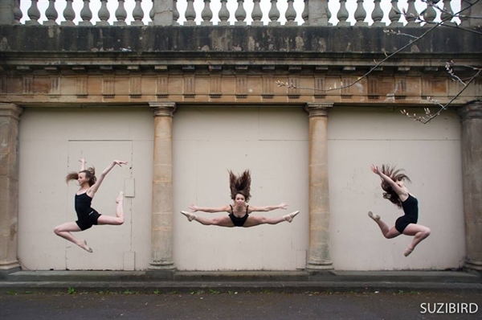

|  | We are a diverse and open society comprising of over 100 members each year and practising loads of different styles of dancing. Our main styles are Jazz, Hip-Hop, Ballet, Contemporary and Tap, but we are very interested in trying different kinds of styles!
The society is about having fun and loving to dance, no matter what standard of dancer you are! |